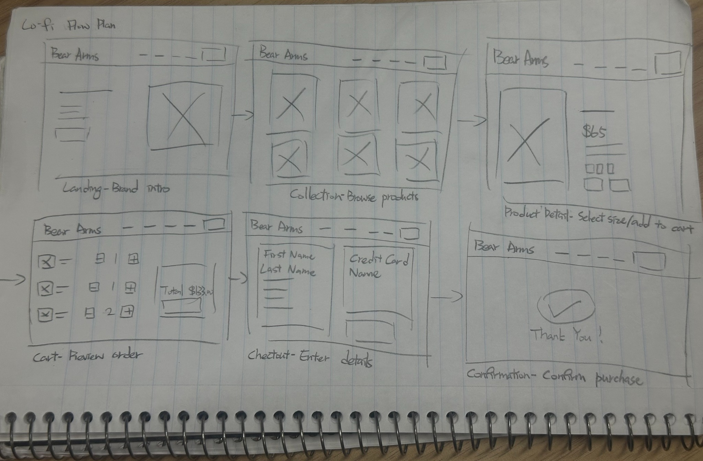
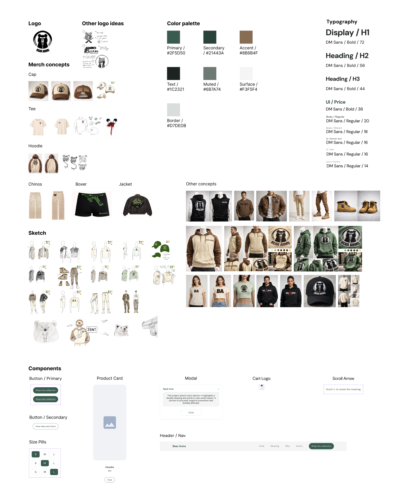
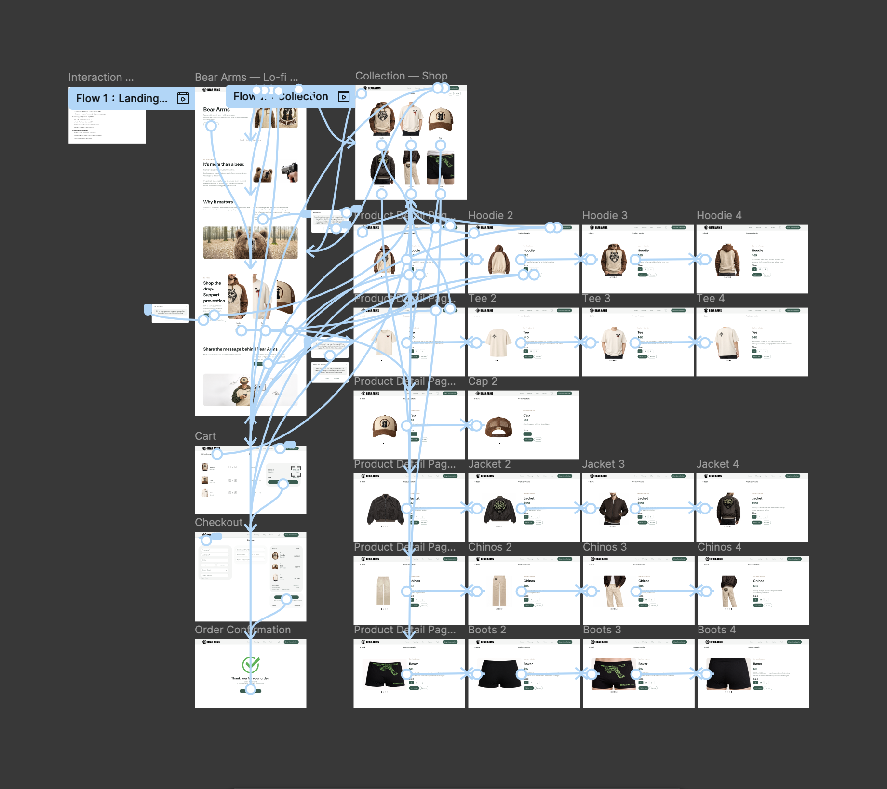

Overview
Bear Arms is a concept ecommerce website that combines a clothing brand’s social message with a clear shopping experience.
Challenge
Balance the brand’s message with understandable navigation and shopping actions.
Design Process
I planned the journey from landing page to collection, product details, cart, checkout, and confirmation. I developed wireframes and connected the screens into a Figma prototype.


Feedback and Iteration
I used first-time user feedback to refine entry clarity, action emphasis, navigation labels, and product interactions.
Outcome
The result was a connected ecommerce prototype covering product browsing, cart, checkout, and order confirmation.

Reflection
The project highlighted the importance of clear structure, consistent design decisions, and feedback during iteration.